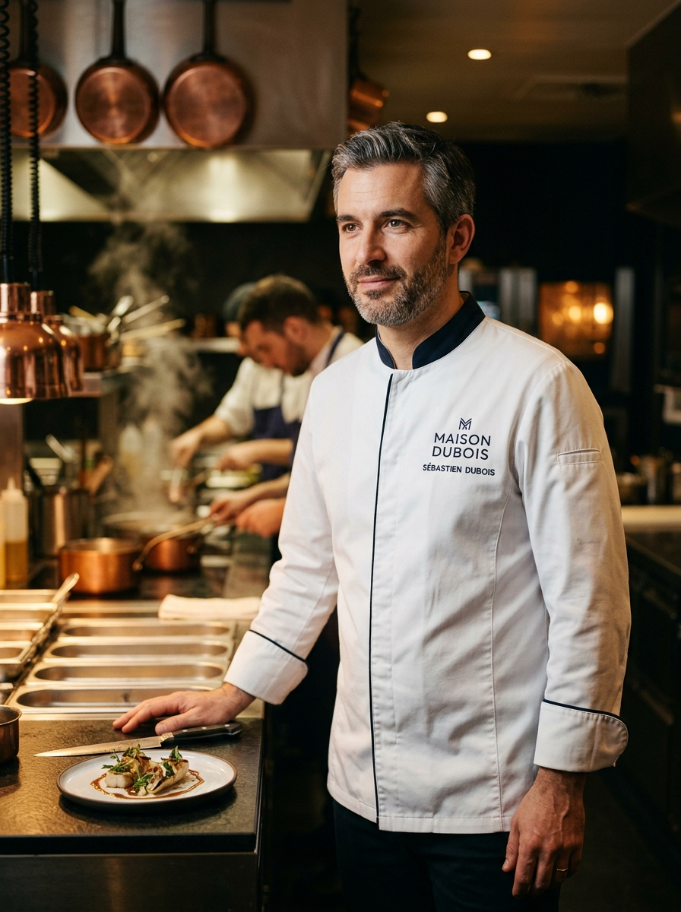
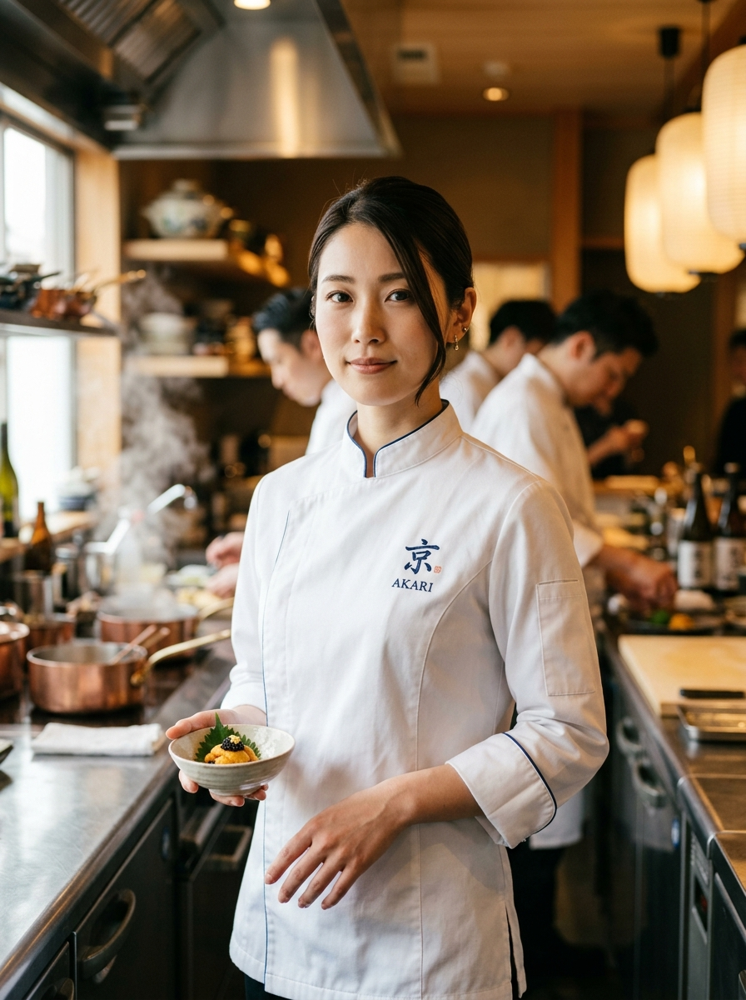
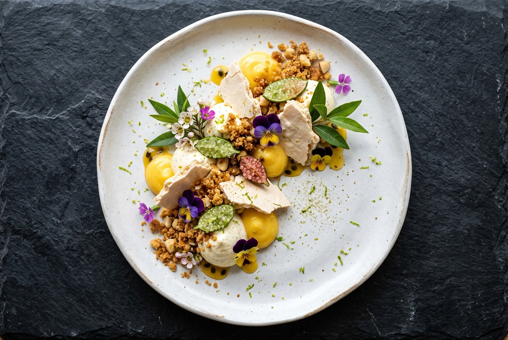
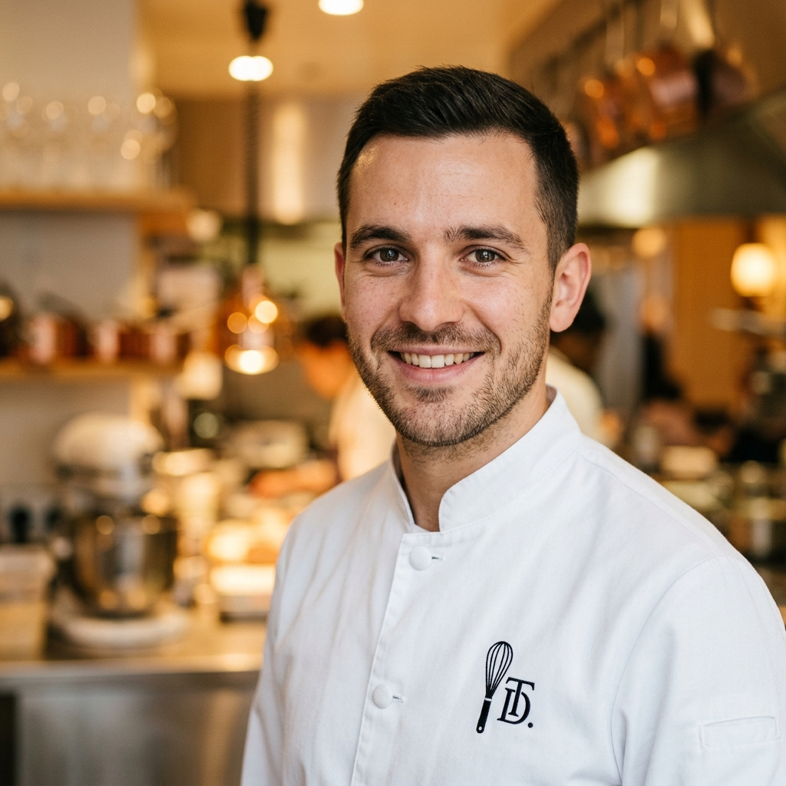

Marcus Leclair
For Professional & Experienced Chefs
Present your craft. Showcase your track record. Connect with Sydney's leading kitchens — directly.
Handpicked Talent




Chef Profile Plans
Simple Process
Three steps to get your culinary career in front of Sydney's finest venues.
Create a comprehensive portfolio showcasing your career history, signature dishes, awards and culinary philosophy.
Sydney's top restaurants, hotels and venues actively browse and shortlist profiles that match their culinary vision.
Accept opportunities aligned with your ambitions and build your culinary legacy in Sydney's finest kitchens.
Built for Culinary Excellence
Deep local industry knowledge. We know every venue, every kitchen, and every opportunity in the city.
Built by industry professionals, for professionals. Your portfolio looks as refined as your cooking.
No recruiters, no middlemen. Connect directly with the people who matter at Sydney's finest kitchens.